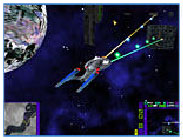

ACTIVISION ASSEMBLES
THE FLEET FOR
STAR TREK® ARMADA II
Santa Monica, CA - February 14, 2001 -Armchair admirals can once again
take command of a fleet of starships with the announcement of
Activision, Inc.'s (Nasdaq: ATVI) Star Trek™: Armada II for the PC. The
game is being developed for Activision by Mad Doc Software, a new
studio comprised of former employees from Looking Glass Studios and
members of the Star Trek: Armada production team from Activision.
"As one of the best-selling Star Trek games of all time, Star Trek:
Armada stood out from the competition with its cutting edge graphics,
top-shelf production values and excellent gameplay," said Larry
Goldberg, executive vice president, Activision Worldwide Studios. "Star
Trek: Armada II is poised to continue the success of the franchise with
the addition of true 3D combat and a host of new innovations."
Set
in The Next Generation universe, Star Trek: Armada II's story unfolds
through three separate single -player campaigns played as the
Federation, Klingons and Borg. Through 27 action packedmissions,
players battle against the Cardassians, Romulans, Borg and Species
8472, each with it's own distinct play style, weapons, ships and base
facilities. Star Trek: Armada II adds a number of new strategic options
and enhancements to Armada's winning gameplay mix. Maps in Star Trek:
Armada II now have 3-D depth, and have been increased in overall size.
To make optimum use of the added dimension, the game offers players a
new Tactical View in which the battle unfolds in true 3D. Ships can
also be placed into 3D formations for different firepower
configurations, and to further immerse the player in the action.
Damage
modeling has also been revised for Star Trek: Armada II. In true Star
Trek fashion, player's weapons can now damage different locations and
sub-systems on targeted ships. Star Trek: Armada II features an
extensive range of multiplayer options, including up-to-eightplayer
competitions over LAN and the Internet where gamers can play as the
Federation, Klingons, Borg, Cardassians, Romulans or Species 8472.
Several additional multiplayer game types will also be available
including variations of Capture -the-Flag, King of The Hill, and Co-Op
style gameplay.
Star Trek:
Armada II is expected to be available in the winter of 2001. This game
has not yet been rated by the ESRB. For additional information on Mad
Doc Software go to
http://www.maddocsoftware.com. For all of the
latest Star Trek news and information, visit the official Internet home
of Star Trek at www.startrek.com. Viacom Consumer Products merchandises
properties on behalf of Paramount Pictures, Paramount
Television, Viacom Productions, and Spelling Television, as well as
third-party properties. Viacom Consumer Products, a unit of Viacom
Entertainment Group, is a subsidiary of Viacom Inc. To learn more about
Viacom Consumer Products and our properties, please visit us at
www.viacomcp.com.
Headquartered in Santa Monica, California, Activision, Inc. is a leading worldwide developer, publisher and distributor of interactive entertainment and leisure products. Founded in 1979, Activision posted revenues of $572 million for the fiscal year ended March 31, 2000. Activision maintains operations in the US, Canada, the United Kingdom, France, Germany, Japan, Australia, and the Netherlands. More information about Activision and its products can be found on the company's World Wide Web site, which is located at http://www.activision.com.
The
statements contained in this release that are not historical facts are
"forward-looking statements." The Company cautions readers of this
press release that a number of important factors could cause
Activision's actual future results to
differ materially from those
expressed in any such forward-looking statements. These important
factors, and other factors that could affect Activision, are described
in Activision's Annual Report on Form 10-K for the fiscal year ended
March 31, 2000, which was filed with the United States Securities and
Exchange Commission. Readers of this press release are referred to such
filings.™, ® and © 2001 Paramount Pictures. All Rights Reserved. Star
Trek and Related Marks are Trademarks of Paramount Pictures.

©2006 MAD DOC SOFTWARE. ALL RIGHTS RESERVED.
Copyright Information | Terms of Use